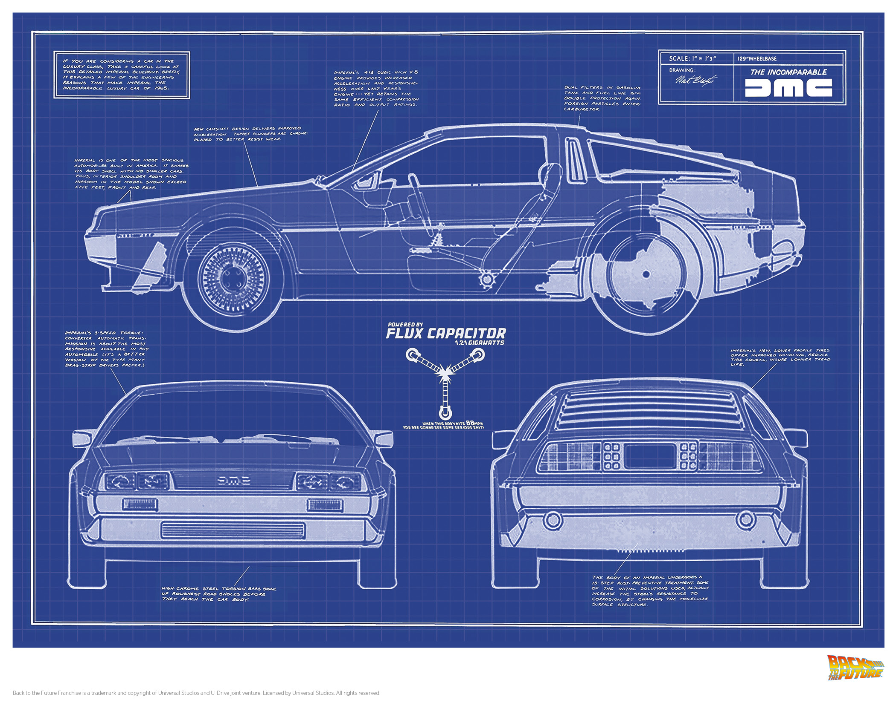

Ըստ Պլատոնի աշխարհը բաժանվումա 2 մասի գաղափարների և իրերի, օրինակ միրգը գաղափարա իսկ խնձորը իր։ Նույն էլ ՕՕՊ-ում կա 2 հասկացողություն class և object : ՕՕՊ-ում class-ը կարելիա է դիտարկել որպես գաղափար(միրգ) իսկ object-ը որպես իր (խնձոր)։
Օրինակ մենք ունենք մեքենայի նախագիծ, այս պարագայում մեքենան class է ( գաղափար ), քանի որ դեռ գոյություն չունի։
իսկ ետ նախագծից ստացած մեքենան, որը արդեն գոյություն ունի դա արդեն օբյեկտ է։